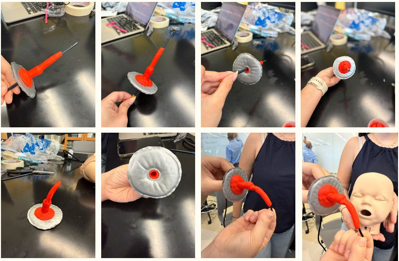
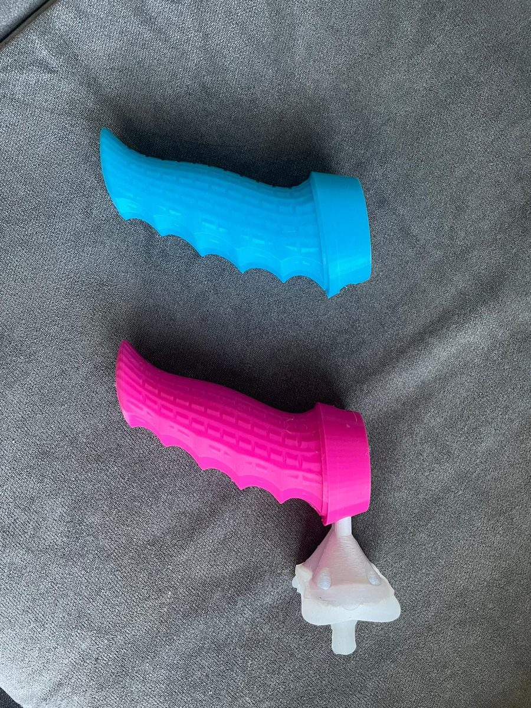
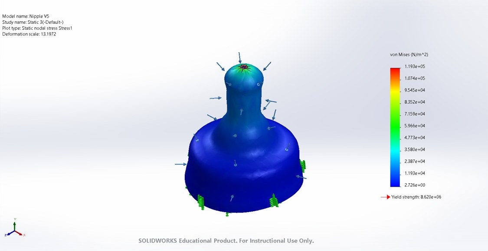
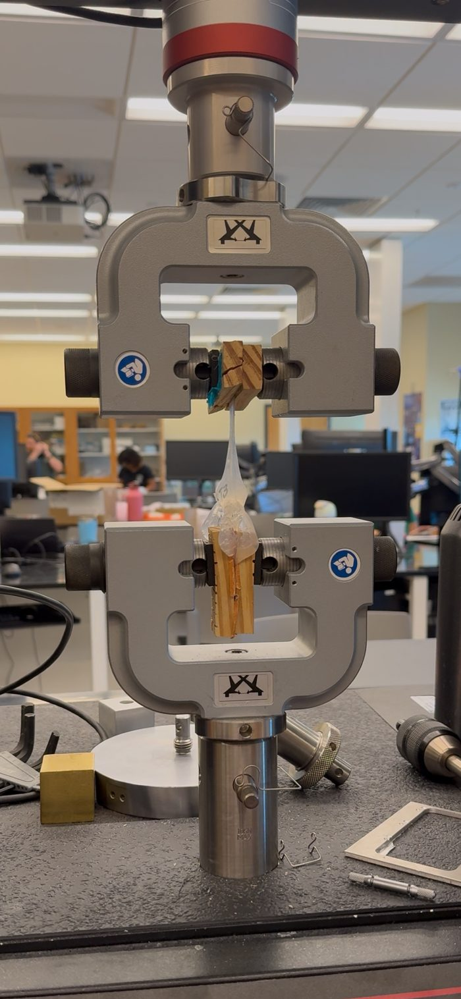
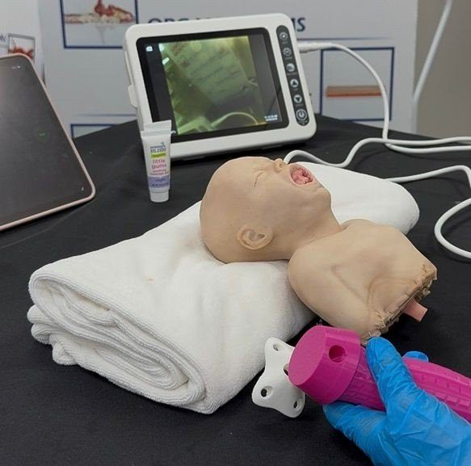
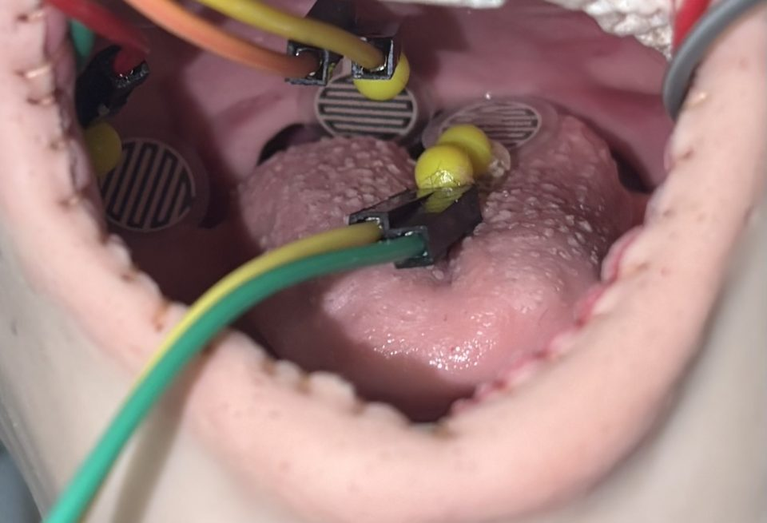

EngineeringEndoTherapeutics, Inc. · Manufacturing & product development
Non-Invasive Oral Interface for Infant Flexible Laryngoscopy
A pacifier-style interface that guides a flexible scope into an infant's airway, so the exam can be done while the baby is awake instead of under anesthesia.
01Overview
This project focused on developing a non-invasive oral interface for anesthesia-free infant flexible laryngoscopy. The goal was to improve scope guidance, oral cavity fit, and safety during pediatric airway evaluation.
Flexible laryngoscopy lets doctors see inside an infant's airway, for example to diagnose laryngomalacia, a common cause of noisy breathing in babies. Awake infants have strong gag reflexes and can't hold still, so many of these exams are done under general anesthesia, which adds cost, time and risk.
02Objective
Design something a clinician can place like a pacifier that keeps the scope on a steady path into the airway, stays away from the spots that trigger gagging, and can be made the same way every time.
- Fits the scope
- Safe depth stop
- Keeps air flowing
- Biocompatible silicone
- Survives repeated use
- Single use, low cost
03My contribution
My role included CAD design, prototype refinement, benchtop testing, and design iteration based on clinician feedback. I evaluated scope insertion pathways, structural stability, manufacturability, material behavior, and infant oral cavity fit to support future clinical translation.
I also developed manufacturing documentation and benchtop test protocols aligned with ISO 13485 and ISO 14971 principles, maintaining traceability across six prototype iterations to support manufacturability and future LSR molding scale-up.
On the manufacturing side, I designed the 3D-printed molds and developed the silicone casting process shown below.
04Design process
Every generation went through the same loop: model it, print a mold, cast it in silicone, and test it. Scroll through one pass.
-
01 · CAD
Modeling the interface
Each generation starts in SolidWorks: a pacifier-style bulb, a shield with airflow holes, and a handle with a channel sized for the scope.
-
02 · 3D-printed mold
Printing the mold
From the model I designed molds with the part's shape as the cavity and a port to fill through, then 3D printed them in PLA and ABS.
-
03 · Silicone casting
Casting in silicone
Two-part platinum-cure silicone is degassed under vacuum to pull out bubbles, injected into the mold by syringe and cured in an oven. Then the mold opens.
-
04 · Testing
Testing the part
Cast parts are compressed, pulled and cycled on an Instron, then tested in an infant airway model for scope insertion, depth and contact with gag-sensitive areas.
Six generations took the design from a rough shape to a validated part. Each one answered a question the last one raised.
- P1Looks likeThe basic shape and size
- P2Feels likeRefined CAD and the choice of material
- P3EngineeringRound versus orthodontic bulb, tested for insertion
- P4MechanicalCompression and tensile tests; round bulb chosen
- P5FunctionalSimulation, gag-zone mapping and clinician feedback
- P6FinalMedical-grade silicone and the full test suite


05Testing & validation
Before casting the final design, I simulated the silicone in SolidWorks. Under pressure, the highest stress sat at the neck and stayed far below what the material can take.

Mechanical testing
On an Instron, cast parts were compressed, pulled and loaded over and over. They held well beyond the loads they need to handle, with no failures during cycling.
Testing in an airway model
In an infant airway model, the scope went through the channel again and again while force sensors watched the gag-sensitive zones and a magnetic sensor confirmed the depth stop.



06Results
The final design kept the scope on a steady path, never pressed on the gag-sensitive zones during testing, and held up under repeated loading. The casting process made defect-free parts in every build, and the documentation is set up for the next step: injection-molded medical-grade silicone.
07Key takeaways
- The process is part of the design. Changes to the mold and the casting steps mattered as much as changes to the part itself.
- Test against the real use. Clinician feedback and the airway model kept each generation focused on what happens during an actual exam.
- Traceability pays off. Documenting every revision made it easy to explain why each change was made, and to hand the design toward injection molding.